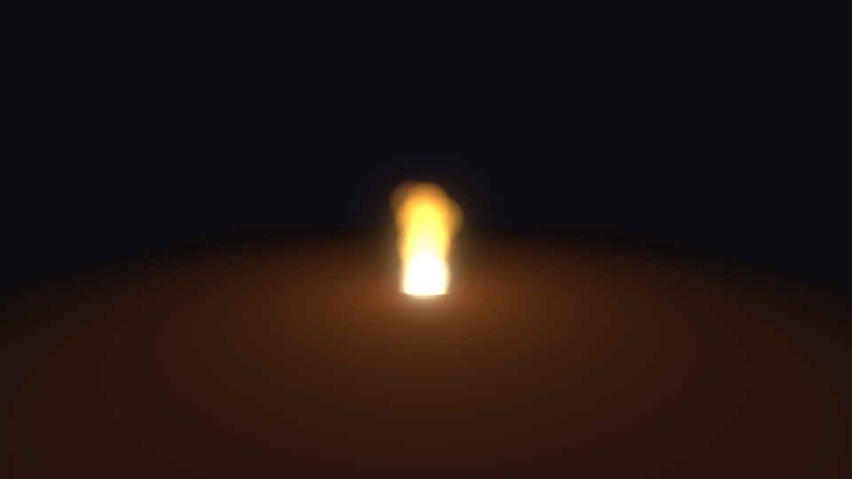
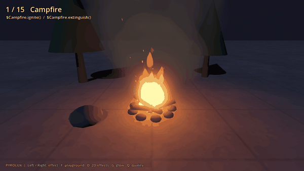
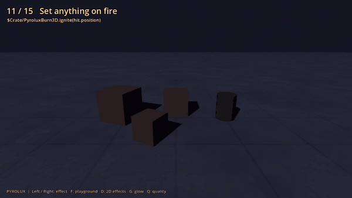

How to make a fire effect in Godot 4
Short version: a campfire is one GPUParticles3D node drawing additive, billboarded quads, a colour ramp that goes from white through orange to dark, a scale curve that shrinks each puff to nothing at the tip, and a point light that flickers. That's it. Below is that in about 60 lines of GDScript you can paste in, then what to change for torches, walls of fire and blue gas flames, and where this approach stops being enough. At the end is the pack I sell, if you'd rather drop in presets.
The 60-line campfire
Add a Node3D, attach this script, run the scene. It needs no textures: the soft dot each particle uses is generated when the node starts. I ran it on Godot 4.4.1 and 4.7.2, on Forward+ and on Compatibility, and the log had zero errors on all four.

extends Node3D
## A small campfire built in code: one additive particle emitter plus a flickering light.
var _light: OmniLight3D
func _ready() -> void:
var p := GPUParticles3D.new()
p.amount = 48
p.lifetime = 0.9
p.randomness = 0.3
var pm := ParticleProcessMaterial.new()
pm.emission_shape = ParticleProcessMaterial.EMISSION_SHAPE_SPHERE
pm.emission_sphere_radius = 0.15
pm.direction = Vector3.UP
pm.spread = 8.0
pm.initial_velocity_min = 1.2
pm.initial_velocity_max = 2.0
pm.gravity = Vector3.ZERO
pm.scale_min = 0.5
pm.scale_max = 0.9
# Grow a little, then shrink to nothing at the tip of the flame.
var sc := Curve.new()
sc.add_point(Vector2(0.0, 0.5))
sc.add_point(Vector2(0.25, 1.0))
sc.add_point(Vector2(1.0, 0.0))
var sct := CurveTexture.new()
sct.curve = sc
pm.scale_curve = sct
# White-yellow core, orange body, fades out dark.
var g := Gradient.new()
g.set_color(0, Color(1.0, 0.95, 0.6, 1.0))
g.add_point(0.35, Color(1.0, 0.45, 0.05, 1.0))
g.set_color(g.get_point_count() - 1, Color(0.3, 0.03, 0.0, 0.0))
var gt := GradientTexture1D.new()
gt.gradient = g
pm.color_ramp = gt
p.process_material = pm
# One soft dot, generated at runtime, so the quads have no hard edges.
var soft := GradientTexture2D.new()
soft.fill = GradientTexture2D.FILL_RADIAL
soft.fill_from = Vector2(0.5, 0.5)
soft.fill_to = Vector2(0.5, 0.0)
var sg := Gradient.new()
sg.set_color(0, Color(1, 1, 1, 1))
sg.set_color(1, Color(1, 1, 1, 0))
soft.gradient = sg
var m := StandardMaterial3D.new()
m.shading_mode = BaseMaterial3D.SHADING_MODE_UNSHADED
m.transparency = BaseMaterial3D.TRANSPARENCY_ALPHA
m.blend_mode = BaseMaterial3D.BLEND_MODE_ADD
m.billboard_mode = BaseMaterial3D.BILLBOARD_PARTICLES
m.vertex_color_use_as_albedo = true
m.albedo_texture = soft
var quad := QuadMesh.new()
quad.size = Vector2(0.5, 0.5)
quad.material = m
p.draw_pass_1 = quad
add_child(p)
_light = OmniLight3D.new()
_light.light_color = Color(1.0, 0.6, 0.25)
_light.omni_range = 5.0
_light.position.y = 0.6
add_child(_light)
func _process(_delta: float) -> void:
var t := Time.get_ticks_msec() * 0.001
_light.light_energy = 1.4 + 0.5 * sin(t * 23.0) * sin(t * 7.3)
Why it reads as fire
Most of the work is in five settings, and if one of them is missing the result looks like orange confetti.
| Setting | What it does |
|---|---|
| Additive blend, unshaded | Overlapping puffs brighten each other. The base where they pile up turns white-hot and the thin tip stays orange. Lighting is off because fire emits light rather than receiving it. |
| Colour ramp with alpha to 0 | Each puff starts pale yellow, turns orange around a third of its life, and ends dark and fully transparent. A dark transparent colour adds nothing under additive blending, which is why puffs vanish instead of popping. |
| Scale curve ending at 0 | Puffs grow for the first quarter of their life and then shrink to a point. That shrink is what gives the flame its taper. Without it you get a column. |
BILLBOARD_PARTICLES | The quads always face the camera and keep the per-particle scale and rotation. It's the billboard mode made for GPUParticles3D, and it also unlocks flipbook animation if you add a texture later. |
| Two sines on the light | One fast sine times one slow sine gives a flicker that never repeats visibly. A single sine looks like a pulsing lamp, and random values every frame look like a strobe. |
The generated radial gradient is doing the job a flame texture usually does. A real texture with a few noisy blobs looks better, but the generated one means the script works in any project with nothing to import.
Variations
A torch is the same emitter made small: emission_sphere_radius 0.05, amount 24, velocity 0.8 to 1.4, quad size 0.25, and the light range down to 3. A wall of fire swaps the sphere for EMISSION_SHAPE_BOX with emission_box_extents of Vector3(2, 0.05, 0.1) and amount 200. Blue gas flames keep everything and change the ramp: start Color(0.8, 0.9, 1.0), middle Color(0.2, 0.5, 1.0), end dark blue with alpha 0. Wind is one line: pm.gravity = Vector3(2, 0, 0) makes every puff lean further the older it gets, which is how real flames lean.
Smoke is a second emitter above the flames with the blend mode back on BLEND_MODE_MIX, a grey ramp whose alpha starts around 0.35 and fades to 0, lifetime 2.5, velocity 0.6 to 1.0, and a scale curve that grows the whole time instead of shrinking. Embers are a third emitter with a handful of tiny bright quads, slow upward velocity, a little sideways gravity, and a lifetime of 3 or 4 seconds.
Where particles stop being enough
This setup covers campfires, torches and braziers. These are the four places it runs out.
Fire that spreads over an object can't be done with an emitter. Setting a crate on fire from the point you hit it means a shader on the crate's own material that grows a noise mask from the hit point, darkens the surface behind the mask, and spawns flames only along the mask's edge. The emitter has no idea where the surface is.
On Compatibility (which is also what Web exports use) there is no depth texture and particles can't fade where they cross the ground or a wall. You see a hard line. Keeping the emitter a little above the surface and the quads small hides most of it.
GPU particles aren't deterministic. Two campfires started at the same time drift out of sync, which is fine, but you can't pause an explosion halfway, scrub it, or replay the exact same one. If you need that, the alternative is a static mesh of quads whose positions are computed in the vertex shader from the quad's index, a seed and the current time. Nothing is simulated, the CPU sends a few floats per frame, and the result is identical on every renderer and for every run with the same seed.
An explosion isn't a bigger campfire. A convincing one is a flash, a fireball that cools into smoke over about a second, a dust skirt along the ground, a shock ring, sparks with gravity and one bounce, debris, a scorch mark and a light pulse, all timed from the same start. That is eight layers to tune per explosion type.
Or drop in a preset
The pack I sell for this, Fire & Explosion VFX for Godot 4 (PYROLUX), is the vertex-shader approach from the previous section with 49 presets: 38 in 3D and 11 in 2D, including candles, torches, campfires, bonfires, walls and rings of fire, coloured flames, five explosion styles, smoke columns, sparks, embers and ash, burning objects, lava pools and rivers, flamethrower and thruster jets, scorch marks and a meteor strike. Everything is generated in code. There are no textures and the addon is small. It's tested on Godot 4.4.1 and 4.7.2 on Forward+, Mobile and Compatibility.

fire_campfire preset. Drag it into a scene and it plays.Using it is a few lines:
Pyrolux.spawn(self, "explosion_grenade", hit.position) # one-shot, frees itself
$Campfire.ignite()
$Campfire.extinguish() # fades out, then emits `finished`
$Crate/PyroluxBurn3D.ignite(hit.position) # fire spreads over any mesh
Pyrolux.wind = Vector3(2, 0, 0) # flames, smoke and embers lean

PyroluxBurn3D under a MeshInstance3D: fire spreads from the hit point, chars the surface and can burn the object away.There's a free version with the campfire and the ground explosion. Check the look and the setup in your own project first. The full pack's itch page has a browser demo of every preset.